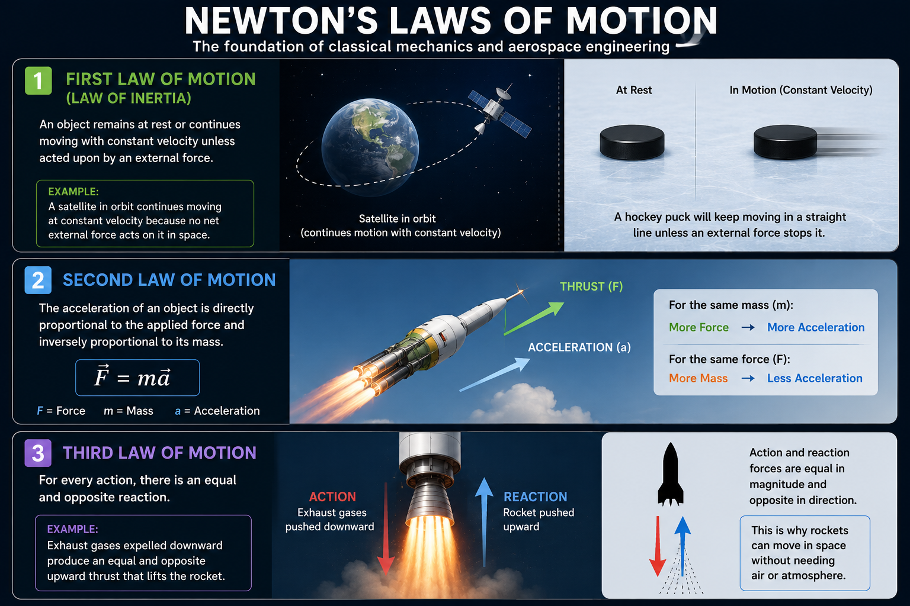

Rockets • Missiles • Satellites
This section introduces fundamental aerospace engineering concepts that form the foundation of rocket science, orbital mechanics and space technology.

Figure: Overview of Newton’s Three Laws of Motion with aerospace examples.
Newton’s Laws of Motion form the foundation of classical mechanics and aerospace engineering. These laws explain how forces influence the motion of objects and are fundamental to understanding rocket propulsion, satellite motion and missile trajectories.
An object remains at rest or continues moving with constant velocity unless acted upon by an external force.
In aerospace applications, this law explains why spacecraft and satellites continue moving through space even after rocket engines stop firing. Since space contains minimal atmospheric resistance, objects maintain their motion for long durations.
Aerospace Example: A satellite in orbit continues moving due to its inertia while gravity continuously changes its direction around Earth.
The acceleration of an object is directly proportional to the applied force and inversely proportional to its mass.
F = ma
This law is extremely important in rocket propulsion. Rocket engines produce thrust that accelerates the launch vehicle upward against gravity. Increasing thrust results in greater acceleration.
Aerospace Example: Increasing rocket engine thrust increases launch vehicle acceleration during liftoff.
For every action, there is an equal and opposite reaction.
Rocket propulsion directly operates on this principle. High-speed exhaust gases expelled downward from the rocket nozzle generate an equal and opposite upward force known as thrust.
This law explains how rockets are capable of operating in space without requiring atmospheric oxygen.
Aerospace Example: Exhaust gases expelled downward produce upward thrust that propels the rocket into space.